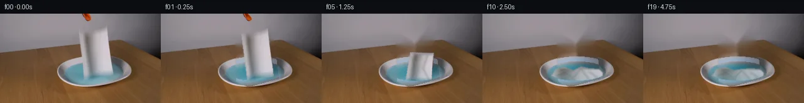

![首帧]()

Round 00
2026-11-05T04:41:27.592700+00:00像素候选变化代码 +255/−0inspection 更新
pixels f5026ce2599bf484 · code a59691b4181a4f2d
查看本轮 generate.py 真实 diff
--- previous/generate.py +++ current/generate.py @@ -0,0 +1,255 @@ +from pathlib import Path + +import cv2 +import numpy as np +from PIL import Image, ImageDraw + +from artifact_io import save + + +ROOT = Path(__file__).resolve().parent +W, H = 256, 144 +SRC_QUAD = np.float32([[126, 29], [170, 19], [179, 99], [137, 109]]) + + +def poly_mask(points, blur=0.0): + mask = np.zeros((H, W), np.uint8) + cv2.fillPoly(mask, [np.rint(points).astype(np.int32)], 255) + if blur: + mask = cv2.GaussianBlur(mask, (0, 0), blur) + return mask.astype(np.float32) / 255.0 + + +def over(base, color, alpha): + a = np.clip(alpha, 0, 1)[..., None] + return np.clip(base.astype(np.float32) * (1 - a) + color.astype(np.float32) * a, 0, 255).astype(np.uint8) + + +def make_clean_plate(first): + """Remove the towel/tool, then restore the smooth dish by local color fitting.""" + erase = np.zeros((H, W), np.uint8) + cv2.fillPoly(erase, [np.int32([[119, 26], [173, 14], [185, 102], [139, 115], [122, 106]])], 255) + cv2.fillPoly(erase, [np.int32([[128, 0], [142, 0], [149, 11], [141, 16]])], 255) + erase = cv2.dilate(erase, np.ones((5, 5), np.uint8), iterations=1) + clean = cv2.inpaint(first, erase, 5, cv2.INPAINT_TELEA) + + yy, xx = np.mgrid[0:H, 0:W] + xo = (xx - 150.0) / 60.0 + yo = (yy - 94.0) / 25.0 + xi = (xx - 150.0) / 49.0 + yi = (yy - 92.0) / 16.4 + outer = xo * xo + yo * yo + inner = xi * xi + yi * yi + object_area = erase > 0 + + # Polynomial coordinates model the gentle left/right illumination already in the source. + xn = (xx - 150) / 60.0 + yn = (yy - 94) / 25.0 + feats = np.stack( + [np.ones_like(xn), xn, yn, xn * xn, yn * yn, xn * yn, xn ** 3, yn ** 3], axis=-1 + ) + zones = [ + (inner <= 0.96, "liquid"), + ((outer <= 1.04) & (inner >= 0.91), "rim"), + ] + for zone, _ in zones: + valid = zone & (~object_area) + # Suppress wood outliers at the feathered outside edge. + if valid.sum() < 40: + continue + A = feats[valid] + pred = np.empty((H, W, 3), np.float32) + for c in range(3): + values = first[..., c][valid].astype(np.float32) + coef, *_ = np.linalg.lstsq(A, values, rcond=None) + pred[..., c] = feats @ coef + fill = zone & object_area + clean[fill] = np.clip(pred[fill], 0, 255).astype(np.uint8) + + # A narrow blur only inside the erased portion removes regression seams without + # disturbing any supplied pixels elsewhere. + soft = cv2.GaussianBlur(clean, (0, 0), 0.75) + core = cv2.GaussianBlur(erase, (0, 0), 1.0).astype(np.float32) / 255.0 + clean = over(clean, soft, core * 0.42) + return clean, erase + + +def warp_towel(first, source_alpha, dst_quad): + M = cv2.getPerspectiveTransform(SRC_QUAD, np.float32(dst_quad)) + rgb = cv2.warpPerspective(first, M, (W, H), flags=cv2.INTER_CUBIC, borderMode=cv2.BORDER_REFLECT_101) + alpha = cv2.warpPerspective( + source_alpha, M, (W, H), flags=cv2.INTER_CUBIC, borderMode=cv2.BORDER_CONSTANT + ) + return rgb, np.clip(alpha, 0, 1) + + +def add_ripples(frame, t): + if t < 5 or t > 14: … diff truncated; 168 more lines …